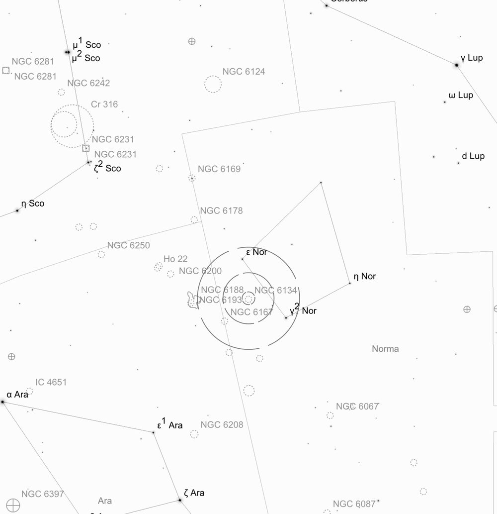
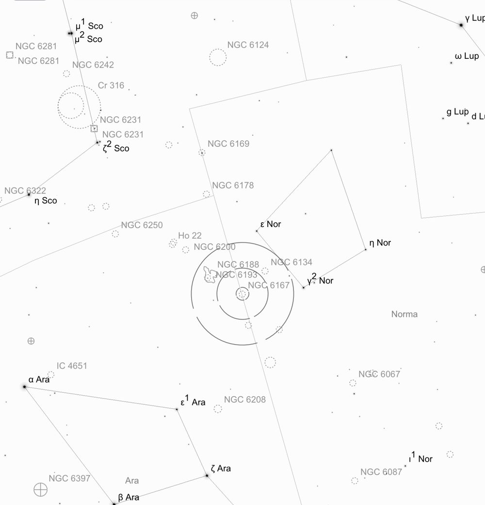
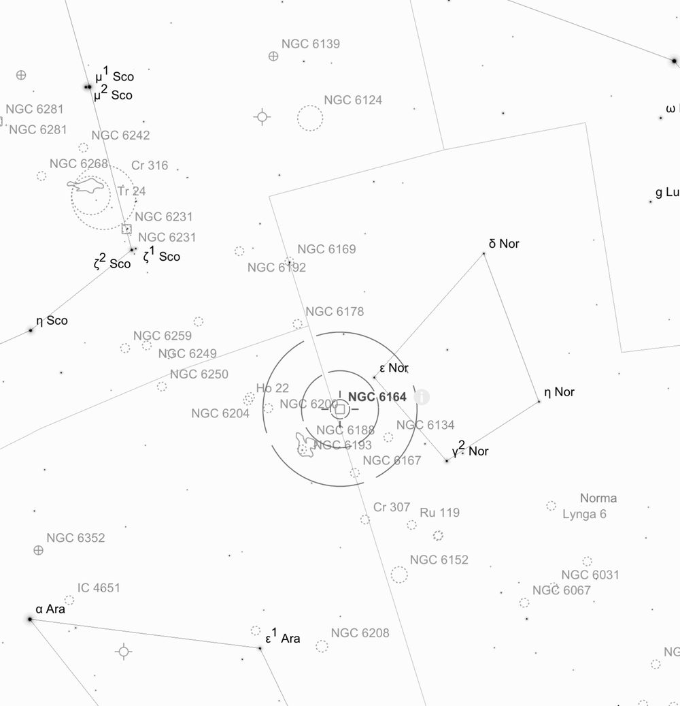
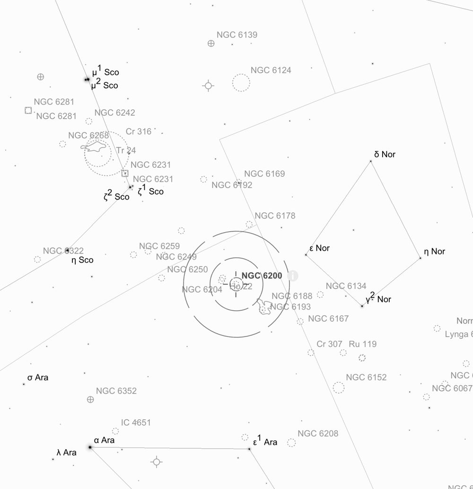
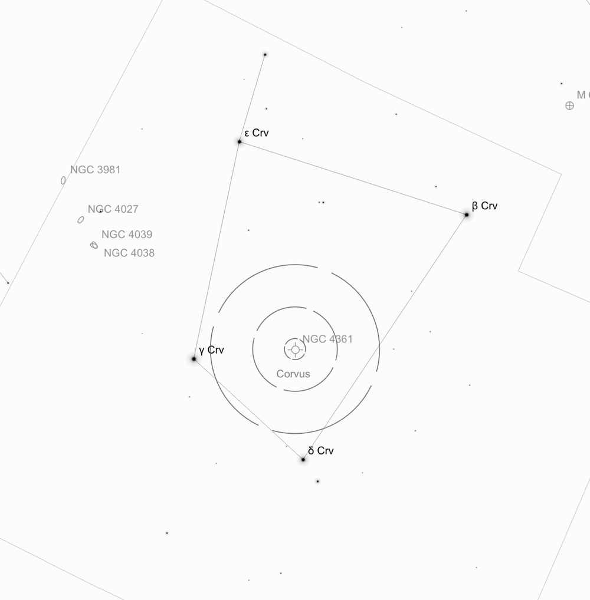
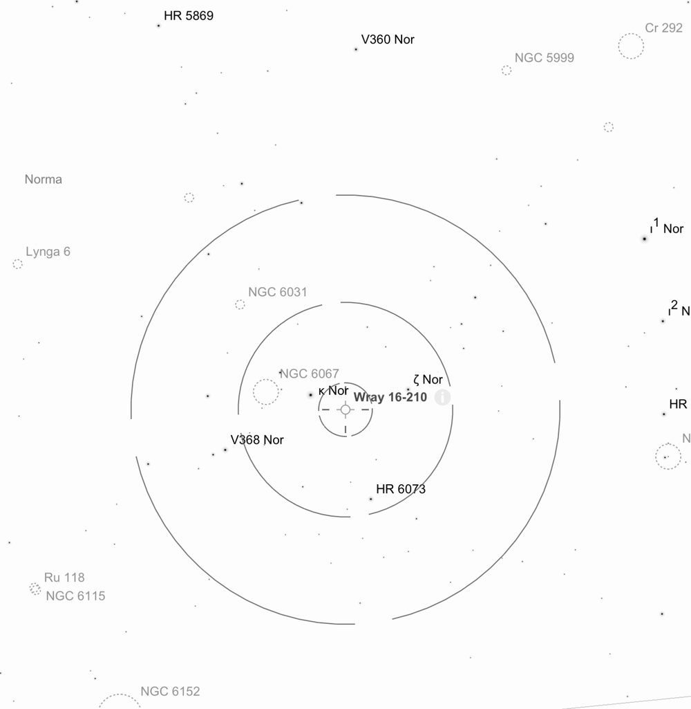
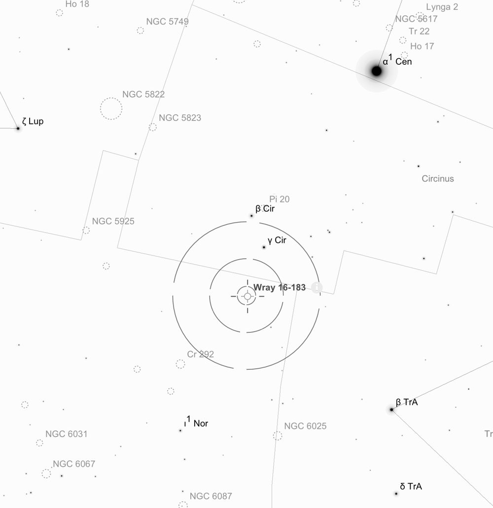
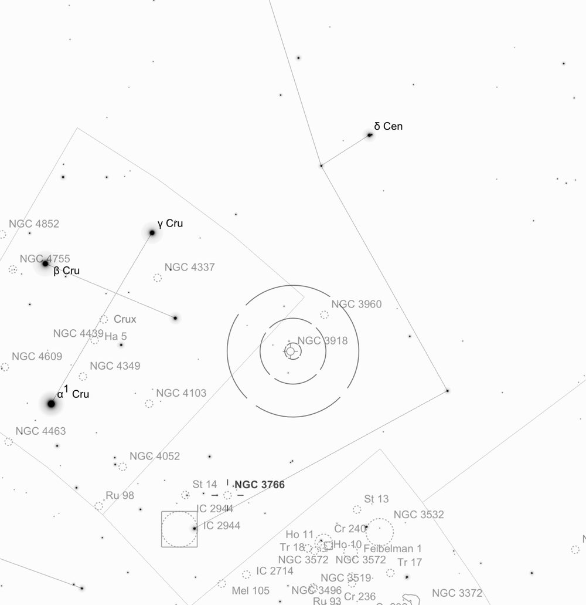
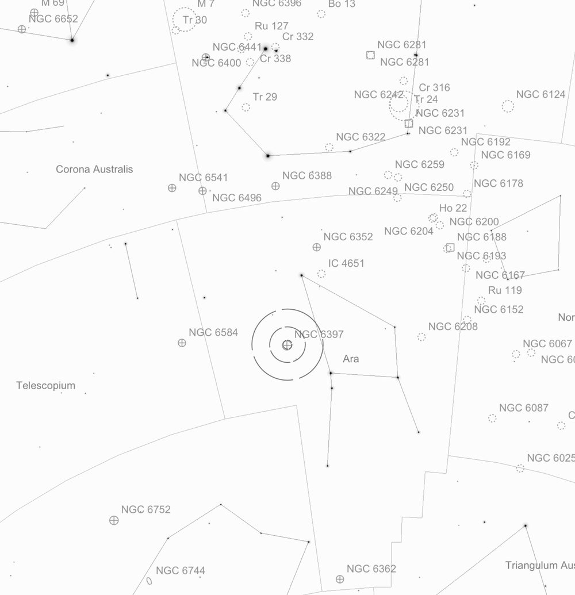
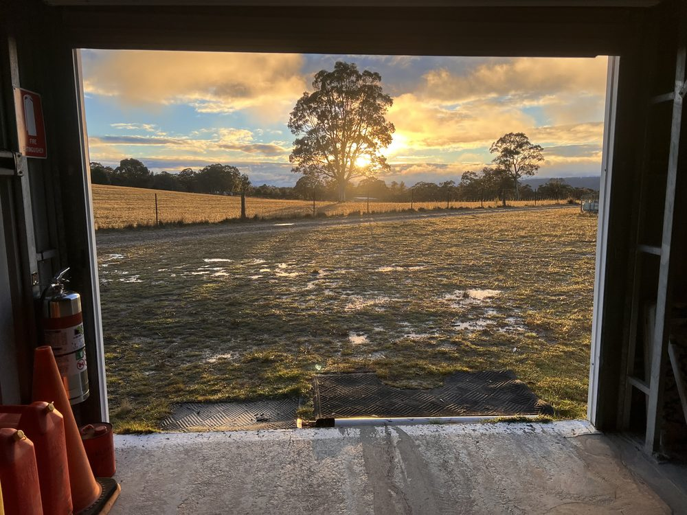

Deep Sky Notes — July 2026
Wiruna Wanderings
------------------------------------------------------------------------------------------------------------------
July 2026 – By Alessandro Spina
------------------------------------------------------------------------------------------------------------------
The forecast for the entire weekend was mixed, so I arrived Thursday afternoon not expecting a lot. After unpacking I wheeled out the Club’s 17.5-inch on the unlikely chance there was a gap in the clouds. As sunset came, a few sucker-holes opened up, with a lot of high cloud hanging around in between. I did not bother doing the 2-star alignment on the Club’s dob and was content to just poke around where the sucker-holes permitted. The focus of my weekend’s observing plan was the constellation of Norma, inspired by Greg Bryant’s Universe article (See ). This constellation is located within the rich star fields of the Milky Way, bordered by Scorpius and Lupus. Whilst not particularly bright (4th magnitude and lower), you can pick out the “L-shaped” pattern formed by -Normae, -Normae and -Normae, wedged in between the tail of Scorpius and the Norma star cloud.

I began the night by placing the middle Telrad circle on the line between -Normae and -Normae. This placed the open cluster NGC 6134 precisely in the field of view (FOV) of the finder (see Figure 1). In the finder this 7th-mag cluster appears as a nebulous haze with no individual stars resolved, but well-marked out by a trio of bright stars. In the 35mm (64× magnification, 1.1° TFOV) eyepiece I found a dense collection of 60+ stars in a uniform circular shape, 10′ across. Even though it is set in a rich starfield, it is relatively easy to pick out NGC 6134. I also noticed a second, smaller concentration of stars to the right of the main group which was likely the open cluster Hogg 19.

Looking back through the finderscope, it was apparent that ~1° away lay another haze of stars, this one marked by two brighter stars. This was the 6th magnitude open cluster NGC 6167 (see Figure 2). In contrast to its neighbour, this is a sparse cluster with a more sprawling nature over 20′. A bright yellow-orange hued star marks the centre of the cluster, with three chains of stars forming a loose “H” shaped asterism in the core. Astro images of the area show the contrast between NGC 6134 and 6167 nicely.

Keeping -Normae in the FOV of the finder, I pushed the scope ~1.5° north to the location of NGC 6164/5, an emission nebula known as the Dragon’s Egg Nebula (see Figure 3). This was originally suspected to be a planetary nebula but is in fact an emission nebula. The gas in this nebula has been ejected by the star at its centre, HD 148937. It is a rare, hot O-type star roughly 40 times more massive than the Sun. On a night with poor seeing conditions and a lot of dew, it was not a great night for hunting emission nebulae. After double checking the eyepiece was not completely dewed up, I noticed what appeared to be some faint nebulosity creating a haze surrounding the 6th magnitude star. The more I looked, the more I noticed a brighter lobe that seemed to stand out on the lower-right. The top-left lobe was intermittent with averted vision (AV). There are some amazing images on AstroBin which reveal several layers of ejected gas giving it the appearance of a typical planetary nebula. This is a target I want to revisit with a larger scope on a night with better conditions to try to tease out more details.
Continuing, I drew a line through -Normae and NGC 6164/5, which pointed me to another open cluster, NGC 6193. This cluster sits in the constellation of Ara (see Figure 3). In the finder it also appears as a small bright haze adorned with two bright stars. In the eyepiece this cluster is a loose collection of 10-20 stars, the bright star at the centre is actually a tight pair, with a much fainter 3rd member floating just above. It was also apparent that the cluster sat beside a larger complex of nebulae stretching across the whole FOV. This was confirmed to be NGC 6188, The Rim Nebula. The cluster provides the energy to illuminate the gas. This is another candidate to revisit to see how much more detail can be made out in the surrounding nebula with higher magnifications and a UHC filter.

With NGC 6193 in the centre of the finderscope, two additional open clusters were also apparent. This small area of sky is littered with clusters which makes hopping from one to the next easy. NGC 6200 and NGC 6204 (see Figure 4) also sit in Ara. This pair of clusters, which will both fit in the FOV of the 35mm eyepiece, made for a great contrasting pair. NGC 6200 is a tight, densely packed collection of 30+ stars. A chain of 4 brighter stars tapers off the top of the cluster. In sharp contrast, NGC 6204 is a large, sparse cluster.

With the waves of cloud starting to roll in thicker, I swung the telescope over to the constellation of Corvus, which sat unobstructed by clouds. Corvus is easy to spot as four bright stars in a trapezoid shape sitting directly above Centaurus. I started by placing the outer Telrad ring on the line between -Corvi (Algorab) and -Corvi (Gienah) (see Figure 5). A triangle of stars in the finder will point you in the direction of the planetary nebula NGC 4361. With the 31mm (72× magnification, 1.1° TFOV) eyepiece in, NGC 4361 stands out from the surrounding stars with its slightly bloated elliptical shaped disk. The edges appear to taper off to the sides. No colour and no central star were visible to me. As I went down the ladder to change eyepiece and add an OIII filter, the clouds put an end to my observing. I headed to bed early that night.
Friday morning was chilly. As I wandered in to make a coffee at 7.30am, the Kitchen thermometer read 3 degrees (with the fire going). Friday was spent doing some jobs around the site, including drying out the Club scope and equipment, which had accumulated a thick layer of dew the night before. The Black Cockatoos seemed particularly active this weekend, with a flock in vocal residence across the main observing field. The wombat that had moved into Imaging Alley has continued its unapproved earthworks.
Come afternoon the weather was not co-operating, but after dinner I was pleasantly surprised to stick my head out from the Kitchen and see a clearing sky. I again rolled out the Club 17.5-inch scope not knowing how long it was going to last. The seeing conditions were not great, the dew was forming on every surface thick and fast with little wind. After pushing the scope around manually for a bit, I finally committed to a 2-star alignment to get the Argo Navis going. If I could finish some objects in Norma, I’d be happy.
I started with NGC 5925, another open cluster in Norma. To find this cluster, drawing a line through -Lupi and -Lupi will point you in the right direction. This 8th-mag cluster takes up most of the FOV in the 35mm. However, this cluster is very sparse, with no real concentration. Set in a rich field, I found it hard to distinguish the boundaries of this cluster. I then moved onto the nearby globular cluster, NGC 5946, which also sits near the border of the constellation Lupus. At low-power this globular is nothing more than a small, elliptical haze with a couple of brighter stars standing out. Throwing in a 9mm (247× magnification, 0.3° TFOV) eyepiece, I was able to split that elliptical haze into a brighter core with a halo, but nothing else was close to being resolved.


Next, I set out to hunt down some of the planetary nebulae in Norma. Menzel 2 is conveniently located near the open cluster NGC 6067 (which I would rate in my top ten open clusters). I started by placing the cluster in the finderscope via pointing the scope towards the Norma star cloud, a visibly brighter patch in the Milky Way. In the FOV will be two bright stars, and -Normae; Menzel 2 lies about 20′ away from -Normae (see Figure 6). The 31mm revealed nothing remotely planetary looking. Upping the power to a 26mm (85× magnification, 0.8° TFOV) and adding an OIII filter helped me spy out one non-stellar disk with a slightly elliptical shape that was not apparent without the filter. Given the conditions, this was probably not the best night for hunting down 13th magnitude planetaries, but it was at the exact location marked in the Stellarium charts I had printed out. Also on my list was Shapley 1, but I had no luck hunting it down. The only jumping-off point was 4th magnitude and -Circini (Circinus is the isosceles triangle shaped constellation tucked alongside the Pointers), but with no bright stars or asterisms to follow, I could not confirm the exact location (see Figure 7). Again, astro images reveal a beautiful delicate blue-grey ring that would make this a worthy object to track down.

Moving on to something a bit easier, I swung over to NGC 3918, the “Blue Planetary” in Centaurus. Using Mimosa and Imai in Crux as pointers will guide you in the direction of NGC 3918 (see Figure 8). With the 26mm eyepiece in, it was easy to spot the elongated disk from the surrounding stars. Blinking with an OIII filter really made it jump out of the field of view. It seemed to form a triangle with two other bright stars. I thought I detected a hint of blue colour — or maybe it is just an illusion because the OIII filter gave the bright stars in the field a blue hue. With a higher-powered 13mm (171× magnification, 0.6° TFOV) + OIII filter in, I could start to see that the central disk was not uniform — there was some structure within the nebula, perhaps layers of gas. While in the area it’s also worth dropping in on the nearby NGC 3766, which I would also rate in my top open clusters.
During the night I also got the chance to look through fellow member Rodney Watters’s new Takahashi FC-76. The sharpness of the stars in this apochromatic refractor was in stark contrast to the slightly out-of-collimation 17.5-inch. Its wide FOV is perfect for large, bright open clusters. The Southern Pleiades (IC 2602) could comfortably fit in the FOV with nearby Mel 101 tucked away in the top corner of the field. 47-Tuc was largely resolved into the core and looked better than I would have expected from a 3-inch aperture. An all around great looking refractor.

Final stop for the night was a trio of globulars in Ara (see Figure 9). First was NGC 6352. This cluster was completely unresolved when viewed through my 10-inch SCT. However, in the Club’s 17.5-inch it had much more structure and shape. With a 22mm (101× magnification, 0.8° TFOV) eyepiece in, I could resolve the brighter stars, giving it a grainy appearance. It’s fairly uniform in brightness, but AV extends the halo. The halo also seemed to sprawl out more to the top-right, giving it an unbalanced appearance. I also noticed a chain of brighter stars appears to bisect the core (perhaps foreground stars). From there I hopped over to NGC 6362, which at 8.9 magnitude and 10′ size is larger than NGC 6352. This time the 22mm was able to pull out even more resolved stars within the core of the cluster. I also noted its rounder shape. A little higher power on a better-quality night may be enough to resolve the last of it. Lastly, the brightest cluster of the trio and the most well-known, was NGC 6397. This beautiful globular takes up most of the FOV in the 22mm eyepiece. The core is resolved, and the halo extends out wide with a messy series of chains of stars hanging off the edges.
I decided to pack it in around 12.30am that night. The layer of dew on the telescope had started to turn into a layer of frost. The seeing conditions improved throughout the night, and I heard from others the clear skies held out for the rest of the night.

Saturday the conditions seemed to improve in the afternoon, being a foolish optimist, I set up the Club’s 22-inch by the Main Shed. After a few teething issues it was set up and working just in time for bands of cloud to start moving in from the west. Despite that, we got to visit a few objects like Eta Carina, Omega Centauri, the Jewel Box and the Ring Nebula (M57) for new members in attendance. However, there would be no chance to revisit the objects I had visited the two previous nights. The cloud only looked like it was getting thicker, so I eventually conceded and wheeled Lord Sidious back into his lair for another night.
Sunday morning saw some high winds and hail sweep through at about 5am. By the time I went out to get a coffee, the front had passed, with a lovely sunrise awaiting (see Figure 10). It was time to head home, but the blue sky that appeared on the drive home was a good sign for those staying another night. For a weekend that had ex-ante low probability of any observing, it turned out to be a decent weekend. It just goes to show, Wiruna can surprise you.
Clear skies.
Table of Targets
| Name | Type | Constellation | RA (J2000) | DEC (J2000) | Mag | Size |
|---|---|---|---|---|---|---|
| NGC 6134 | Open Cluster | Norma | 16h 27m 49s | -49° 09′ 40″ | 7.2 | 9.0′ |
| NGC 6167 | Open Cluster | Norma | 16h 34m 39s | -49° 45′ 32″ | 6.7 | 7.0′ |
| NGC 6164/5 | Emission Nebula | Norma | 16h 33m 52s | -48° 06′ 40″ | - | 8.0′ |
| NGC 6193 | Open Cluster | Ara | 16h 41m 17s | -48° 46′ 37″ | 5.2 | 15′ |
| NGC 6200 | Open Cluster | Ara | 16h 44m 06s | -47° 28′ 00″ | 7.4 | 12′ |
| NGC 6204 | Open Cluster | Ara | 16h 46m 09s | -47° 01′ 36″ | 8.2 | 5.0′ |
| NGC 4361 | Planetary Nebula | Corvus | 12h 24m 31s | -18° 47′ 06″ | 10.9 | 1.4′ |
| NGC 5925 | Open Cluster | Norma | 15h 27m 23s | -54° 30′ 54″ | 8.4 | 20′ |
| NGC 5946 | Globular Cluster | Norma | 15h 35m 29s | -50° 39′ 35″ | 10.7 | 3′ |
| Mz 2 | Planetary Nebula | Norma | 16h 14m 32s | -54° 57′ 05″ | 13.0 | 0.4′ |
| Sp 1 | Planetary Nebula | Norma | 15h 51m 41s | -51° 31′ 29″ | 12.6 | 1.0′ |
| NGC 3918 | Planetary Nebula | Centaurus | 11h 50m 18s | -57° 10′ 57″ | 8.1 | 0.3′ |
| NGC 6352 | Globular Cluster | Ara | 17h 25m 29s | -48° 25′ 20″ | 8.9 | 7.1′ |
| NGC 6362 | Globular Cluster | Ara | 17h 31m 55s | -67° 02′ 54″ | 8.9 | 10′ |
| NGC 6397 | Globular Cluster | Ara | 17h 40m 42s | -53° 40′ 28″ | 5.2 | 32′ |